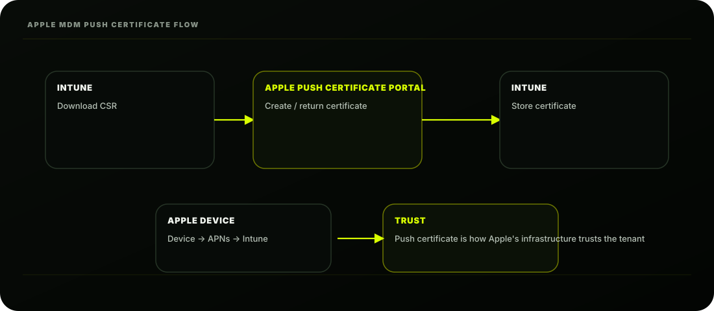
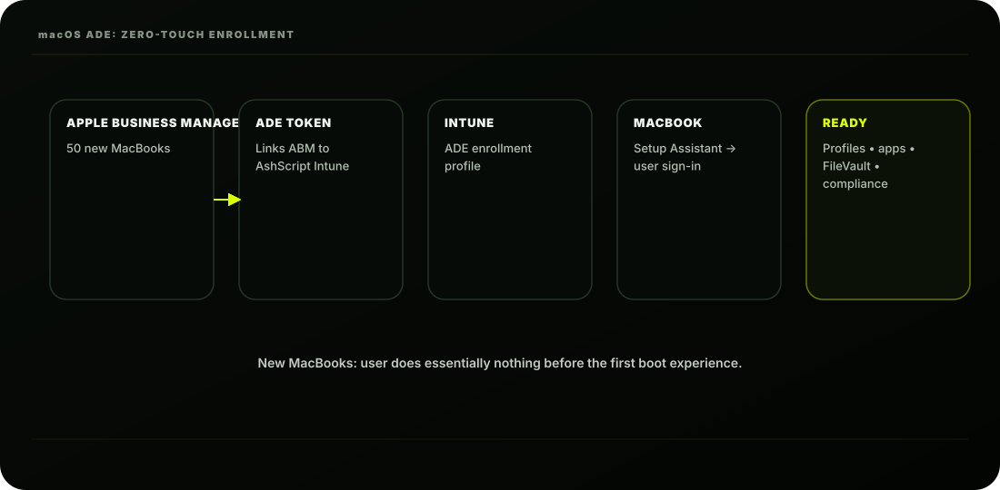

The Scene
Wednesday afternoon. A pallet of 50 MacBooks arrives at AshScript's Mumbai office. Another 100 are
already in use across the company; designers, developers, and executives who have been using
Macs for years, completely unmanaged.
Priya from the design team walks over:
"I heard IT is going to manage our Macs now. I want to be clear; I have custom fonts, design
tools, and a very specific setup. I don't want any of that touched."
Ashpak nods:
"We're not here to change your workflow, Priya. We need to ensure your Mac is encrypted, has
the latest security updates, and can access company resources safely. Your design tools stay
exactly as they are."
She thinks for a moment:
"Fine. What do I need to do?"
"For the new Macs; nothing. For your existing Mac; about 10 minutes."
That's the promise of macOS enrollment done right. Let's build it.
macOS Management in Intune: What's Possible
Before enrolling a single Mac, Ashpak needs to understand what Intune can and cannot do with
macOS:
The Three Prerequisites for macOS Enrollment
Before a single Mac can enroll, Ashpak must configure three things in the Intune portal:
Let's set up each one.
PREREQUISITE 1: Apple MDM Push Certificate
→ Allows Intune to communicate with Apple devices
→ Required for ALL Apple platforms (macOS + iOS)
→ Must be renewed annually
PREREQUISITE 2: Apple Business Manager (ABM) Account
→ Apple's free enterprise device management portal
→ Links purchased devices to your tenant
→ Required for ADE (zero-touch) enrollment
PREREQUISITE 3: ADE Token (MDM Server Token)
→ Links ABM to your specific Intune tenant
→ Downloaded from ABM, uploaded to Intune
→ Must be renewed annually
macOS enrollment prerequisites
|
Prerequisite
|
Purpose
|
Renewal / note
|
|
Apple MDM Push Certificate
|
Allows Intune to communicate with Apple devices
|
Required for all Apple platforms • renew annually
|
|
Apple Business Manager (ABM)
|
Links purchased devices to the tenant
|
Required for ADE • free enterprise portal
|
|
ADE Token (MDM Server Token)
|
Links ABM to the specific Intune tenant
|
Downloaded from ABM, uploaded to Intune • renew annually
|
Step 1: Apple MDM Push Certificate
This is the master key that enables Intune to manage any Apple device. Without it, zero Apple devices
can enroll.

Intune CSR → Apple certificate portal → certificate → APNs → Intune
How the Push Certificate Works:
Create the Apple MDM Push Certificate:
Step-by-step:
STEP 1: Download CSR
Click "Download your CSR"
Save file: MDM_Microsoft Intune_Certificate.csr
This is your Certificate Signing Request
STEP 2: Create certificate at Apple
Click "Create your MDM push certificate"
Critical warning about the Apple ID: Always use a shared company Apple ID (like
mdm@ashscript.com ); never a personal one. The Apple MDM Push Certificate is tied to the Apple
ID that created it. If Ashpak uses his personal Apple ID and leaves the company, the certificate
cannot be renewed; and all Apple devices lose management. This has happened in real
organisations.
-
Annual renewal: The push certificate expires every year. Set a calendar reminder 30 days
before expiry. If it lapses; all Apple devices unenroll from Intune and must be re-enrolled
manually.
Intune CSR → Apple certificate portal → certificate → APNs → Intune
Step 2: Apple Business Manager (ABM)
Apple Business Manager is Apple's free web portal for enterprises. It's where AshScript:
Registers purchased Apple devices for ADE
Manages Volume Purchase Program (VPP) app licences
Connects to Intune as an MDM server
Setting Up Apple Business Manager:
Sign in with: ashpak-apple@ashscript.com
↑ IMPORTANT: Use a company Apple ID
NOT a personal Apple ID
If Ashpak leaves → company keeps cert
Portal: Apple Push Certificates Portal
Save as: MDM_Certificate.pem
STEP 3: Upload to Intune
Back in Intune portal:
Apple ID: ashpak-apple@ashscript.com
Upload certificate: MDM_Certificate.pem
→ Upload → Done
Apple MDM Push Certificate: Active
Expiry: 25 Sept 2027 (renew before this date!)
D-U-N-S Number: Required to verify AshScript is a legitimate organisation. Most businesses
already have one; check with your finance team before applying.
Step 3: ADE Token: Connecting ABM to Intune
The ADE token links Apple Business Manager to AshScript's specific Intune tenant.

Apple Business Manager → ADE token → Intune → MacBook → ready device
In Intune: Create MDM Server:
ENROL IN APPLE BUSINESS MANAGER
3
Fill in AshScript company details
(Dun & Bradstreet business identifier)
5
Apple verifies the organisation (3-5 business days)
6
ABM account approved for AshScript
STEP 1: Download Intune public key
Click "Download your public key"
Save: Intune_public_key.pem
STEP 2: Create MDM Server in Apple Business Manager
Go to: business.apple.com
Name: Intune-AshScript
Upload key: Intune_public_key.pem
Assigning Devices to Intune in ABM
Now Ashpak links the 50 new MacBooks to the Intune MDM server in ABM:
Then sync in Intune to pull the device list:
→ Save
Download the server token:
Save: AshScript_Token.p7m
STEP 3: Upload token to Intune
Back in Intune:
Upload token: AshScript_Token.p7m
Apple ID: ashpak-apple@ashscript.com
→ Next → Create
ADE Token Active
Token Name: Intune-AshScript
Devices: 0 (none assigned yet)
Expiry: 25 Sept 2027
business.apple.com
; registered by Apple reseller at purchase)
→ Continue → Done
50 devices now visible
Creating an ADE Enrollment Profile for macOS
The enrollment profile controls the Setup Assistant experience; what the user sees when they first
turn on the Mac.
ADE enrollment profile
|
Setting
|
AshScript value
|
|
User affinity
|
Enrol with User Affinity (device tied to specific user)
|
|
Authentication method
|
Setup Assistant with modern auth
|
|
Install Company Portal
|
Yes (required for user affinity)
|
|
Department
|
AshScript IT
|
|
Support phone number
|
+91 22 XXXX XXXX
|
|
Supervised mode
|
Yes
|
|
Locked enrollment
|
Yes
|
|
Await final configuration
|
Yes (blocks desktop until policies apply)
|
Profile Configuration:
Basics:
Management Settings:
Name: AshScript macOS Standard Enrollment
Description: ADE profile for all AshScript MacBooks
Setup Assistant Panes; What to Show/Hide:
Assign the profile:
The macOS ADE Enrollment Experience: User View
These are the screens during macOS first-run setup.
Corporate devices should skip unnecessary ones:
HIDDEN (pre-accepted/pre-configured by IT):
Privacy
Location Services
Apple ID (use work account instead)
Terms and Conditions
Siri setup
Screen Time
iCloud storage
SHOWN (user must complete):
Language selection
Wi-Fi selection
Company sign-in (Entra ID credentials)
Assignments:
Assign to: All ADE devices
(or specific device group)
→ Create
With everything configured, here's what happens when the new MacBook is turned on:
Method 2: Company Portal Enrollment (Existing Macs)
For AshScript's 100 existing MacBooks (not purchased through ABM), Ashpak uses the Company
Portal enrollment method. This is Priya's Mac; already set up, not going to be wiped.
What Priya Does:
USER EXPERIENCE; NEW MacBook (ADE Enrolled)
1
Employee opens box, turns on MacBook
2
macOS Setup Assistant starts:
Language → Country → Wi-Fi selection
4
Sign in with Entra ID account:
priya@ashscript.com → MFA approval
5
Enrollment completes automatically
6
Configuration profiles download and apply:
Wi-Fi profile
FileVault encryption enabled
Certificate deployed
Compliance policy evaluating
7
Desktop appears; Mac is managed
Company Portal app installed and visible
Total time: ~20-25 minutes
User effort: Minimal (language, Wi-Fi, sign in)
What Intune Installs on Priya's Mac:
STEP 1: Download Company Portal
Open Mac App Store
Search: "Intune Company Portal"
Download and install (free)
STEP 2: Sign in to Company Portal
Open Company Portal
Sign in: priya@ashscript.com
MFA approval on phone
STEP 3: Begin enrollment
Company Portal: "Get Started"
→ "Begin" → Follow prompts
→ Download Management Profile
STEP 4: Install Management Profile
System Settings → Privacy & Security
→ Profiles → Downloaded Profile
→ Install → Enter Mac password
→ Install → Done
STEP 5: Enrolled
Company Portal shows: "Device is compliant"
Priya's Mac now appears in Intune
MANAGEMENT PROFILE CONTENTS
MDM enrollment certificate
Intune agent (Microsoft Intune MDM Agent)
CONFIGURATION PROFILES THAT THEN PUSH:
Wi-Fi profile (connects to AshScript corporate Wi-Fi)
Certificate profile (corp auth certificate)
FileVault settings (encryption policy)
Compliance settings
WHAT IS NOT TOUCHED:
× Priya's design apps (Adobe, Figma, Sketch)
× Her custom fonts
× Her file system (personal files untouched)
× Her browser bookmarks
This is the answer Ashpak gave Priya. Intune installs a management profile; a lightweight agent
; and pushes company policies. It doesn't touch personal apps, files, or settings.
FileVault Encryption: Non-Negotiable for AshScript
Every AshScript Mac must have FileVault enabled; Apple's full-disk encryption. Without it, a stolen
laptop means exposed company data.
Intune manages FileVault via a configuration profile:
What happens when FileVault policy applies:
× Her local settings and preferences
Platform: macOS
Profile Type: Endpoint Protection
Enable FileVault: Yes
Recovery key rotation: Every 6 months
Hide recovery key: Yes
Disable sign-out: No
Number of times allowed
to bypass: 3
2
User is prompted: "Your organisation requires
FileVault encryption."
3
User clicks Enable → enters their Mac password
4
FileVault encrypts the disk (runs in background)
5
Recovery key is escrowed to Intune automatically
(stored securely; IT can retrieve if needed)
6
Device becomes compliant for encryption requirement
Retrieve FileVault recovery key (if user forgets password):
macOS Compliance Policy
Ashpak creates a macOS compliance policy alongside enrollment:
Key: X3K7-M2P9-...
Platform: macOS
Device Health:
Require system integrity protection
Require device to have no compromised
software
Device Properties:
Minimum OS version: 13.0 (Ventura)
Maximum OS version: (none; allow all)
System Security:
Require password
Minimum length: 8
Require encryption (FileVault)
Minutes idle before
screen lock: 5
Actions for noncompliance:
Day 0: Mark device noncompliant
Day 3: Send email to user
Day 14: Block access (CA enforcement)
Assign to: INTUNE-DEV-MACOS
macOS Shell Scripts: Extending Intune's Reach
For settings that Intune configuration profiles can't handle natively, Ashpak uses shell scripts. Intune
can deploy and run shell scripts on macOS devices silently:
Example; Disable guest account on all Macs:
Script settings in Intune:
Supervised vs Unsupervised: Key Difference
This distinction matters significantly for what Intune can manage:
bash
#!/bin/bash
# Disable guest user account on AshScript Macs
# Run as: System context
# Frequency: Once
# Disable guest account
dscl . -create /Users/Guest AuthenticationAuthority ";DisabledUser;"
defaults write /Library/Preferences/com.apple.loginwindow GuestEnabled -bool false
echo "Guest account disabled successfully"
exit 0
Script: GuestDisable.sh
Run as account: System
Hide script: Yes
Max run times: Once
Retry times: 3
Assign to: INTUNE-DEV-MACOS
macOS management comparison
|
Supervised (ADE enrolled)
|
Unsupervised (Company Portal enrolled)
|
|
New Macs via ABM/ADE
|
Existing Macs via Company Portal
|
|
Silent app install
|
Warning: User approval needed for some installs
|
|
Locked enrollment
|
× User can unenroll
|
|
Lost mode available
|
× No lost mode
|
|
More profile options available
|
× Fewer profile options
|
|
Bootstrap token
|
× No bootstrap token
|
AshScript macOS Enrollment Summary
TOTAL macOS DEVICES: 150
MANAGED AFTER ROLLOUT: 150 (100%)
AshScript macOS enrollment plan
|
Device type
|
Enrollment method
|
|
50 new MacBooks
|
ADE via Apple Business Manager • Zero-touch • supervised • user turns on → auto-enrolls
|
|
100 existing MacBooks
|
Company Portal (manual) • user installs CP, signs in • 10 minutes per device • unsupervised enrollment
|
AshScript's Current State After Lesson 3.4
|
Concept
|
Remember This
|
|
Apple MDM Push Certificate
|
Master key for all Apple management; renew annually
|
|
Company Apple ID
|
Always use shared company Apple ID; never personal
|
|
ADE
|
Zero-touch for new Apple devices via ABM
|
|
FileVault
|
Mandatory full-disk encryption for AshScript Macs
|
|
Recovery key escrow
|
Intune stores FileVault key; retrieve from device page
|
|
Shell scripts
|
Extend Intune management beyond native profiles
|
|
User affinity
|
Ties device to specific user
|
Key Concepts to Lock In
Concept Remember This
Apple MDM Push Certificate Master key for ALL Apple management; renew annually
Company Apple ID Always use shared company Apple ID; never personal
Apple Business Manager Free enterprise portal; registers devices for ADE
ADE Token Links ABM Intune; renew annually
ADE Zero-touch enrollment for new Apple devices via ABM
Company Portal Manual enrollment method for existing Macs
Supervised ADE enrolled; more management capabilities
Unsupervised Company Portal enrolled; fewer capabilities
FileVault macOS full disk encryption; mandatory for compliance
Concept Remember This
Recovery key escrow Intune stores FileVault key; retrieve from device page
Shell scripts Extend Intune management beyond native profiles
User affinity Ties device to specific user; required for personal Macs